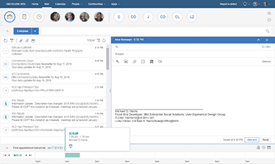
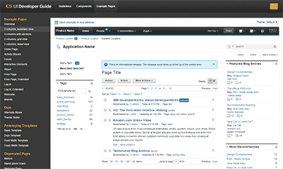
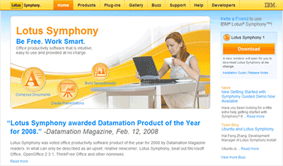

Hi! :) I'm Michael Harris. Glad to meet you!
I'm a Front-end web developer with 25+ years of experience successfully creating outstanding content, delivering innovative products, and leading empowered teams.
There's a lot of great information about me in my résumé and on my LinkedIn profile however, you didn't come to this site for that. And I won't repeat any of it here... so be sure to check those out if you haven't already. This space is different. I want you to be able to really get to know me here. What am I really made of? How do I work with other people? What am I passionate about? I'm so glad you asked. Pull up a chair and grab a beverage of your choice and let's chat for a bit.
Portfolio
Stories are what help us understand one another better. Here are a few stories I've chosen to share with you here so you can really get to know me in a way that you can't in other ways.
IBM Verse

Verse story here.
IBM SmartCloud for Social Business
One UI

xxx story here.
Lotus Symphony

Symphony story here.
Ancient History
In addition to all the web and front-end code I've worked on in recent years,
I've also worked on everything from server-side code to application code to
application builder code to operating system code.
This gives me a broad surface area of experience to bring to your team.
One thing that has been constant throughout my career though... I've always
worked with wonderful designers and over the years I have absorbed a
lot about how the design process works. On the rare occasion that I wasn't
working with a designer, I did the designs on my own. And even when
I was working with a designer (or even a team of designers), I got to
flex my design muscle a bit too.

Recommendations
I'm a team player. I really like it when my team is empowered and thriving. And I take great joy in helping them get there. Want to know what my co-workers think of me? Don't take my word for it... let's ask them. My most recent recommendations are of course on my LinkedIn profile. But there are some others that make more sense to share here.
Here I come to save the day!
I so love this one.
This Photoshop of me as "Mighty Mouse" came in an instant message from one of my colleagues
who I helped through a really complicated technical problem. Now, in that particular job,
I tended to take care of the complicated JavaScript and Java coding so that my colleague could
power through massive amounts of new HTML and CSS without worrying about complicated
framework stuff. Over time in that role, I got this picture sent to me a lot.
Worth your weight in gold
Well, this note really isn't the reason I weigh a little more than I should... but the sentiment
is greatly appreciated. Tom and I were coordinating work across multiple teams in our company
and I was able to get everyone on the same page. I meticulously pay attention to details and
am quite organized. It's the only way to get things done.
We need you
Yes, that is a framed post-it note. It lives on my desk where I can see it every day.
It was written by a Chief Architect I worked for who has now retired.
I had (and still have) great respect for this person.
It not only reminds me that all the work I do really matters, but also that I
need to encourage those around me so they know their work really matters too.
Contact
Wow, you made it through all that... Way to go! By now you've probably already looked at the source for this site too... but if you haven't, feel free to view it here in the browser or look at my GitHub repository. If you like what you've read and seen here and you want more information, contact me at jbmdharris@gmail.com or through LinkedIn. I look forward to hearing from you.